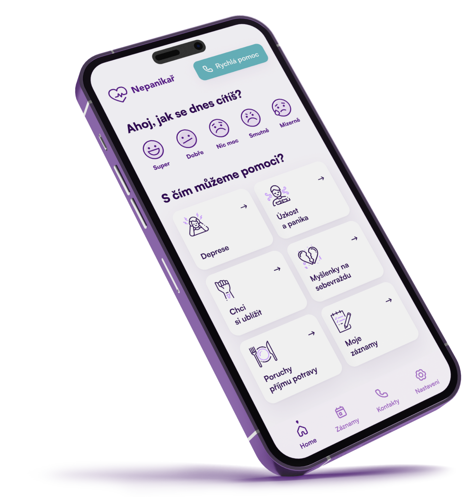
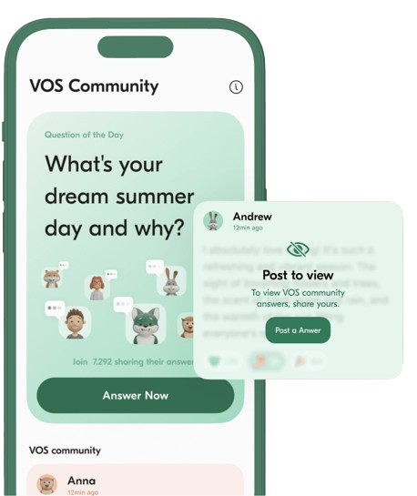

NEPANIKAŘ
Příběh projektu
- Start projektu byl 2019 s vizí vytvořit první českou mobilní aplikaci pro poskytování bezplatné a rychlé psychologické pomoci.
- Zakladatelka Veronika Kamenská má sama zkušenosti s duševním onemocněním.
Rozvoj a šíření pomoci
- V roce 2020 se projekt rozšířil o anonymní chatovou a e-mailovou poradnu, vytvořil rozsáhlou Mapu pomoci s tisíci kontakty na odborníky.
- V roce 2021 představil on-line terapie, umožňující spolupráci s odborníky.
Opravdu pomáhá
- Projekt získal několik ocenění, jako například Cena Gratis Tibi.

VOS
Příběh projektu
- VOS bylo založeno v Praze v roce 2021 během pandemie, kdy se zvýšil důraz na duševní zdraví.
- Zakladatel Jiří Diblík zažíval panické ataky, což vedlo k inspiraci pro vytvoření VOS.
Rozvoj a šíření pomoci
- Přestože organizace je teprve na začátku své cesty, VOS se stává cenově dostupným společníkem pro duševní zdraví.
- VOS se zaměřuje na poskytování každodenní péče o duševní zdraví prostřednictvím inovativních technologií.
- Filozofie organizace spočívá ve snaze udělat péči o duševní zdraví běžnou a součástí každodenní rutiny.